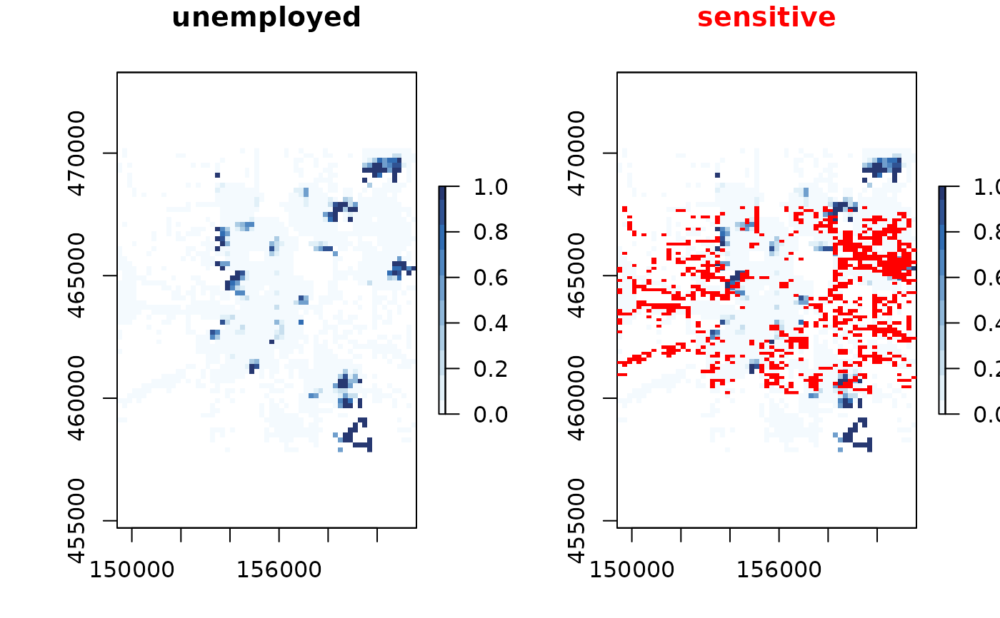

remove_sensitive removes sensitive cells from a sdc_raster.
The sensitive cells, as found by is_sensitive() are set to NA.
Usage
remove_sensitive(x, max_risk = x$max_risk, min_count = x$min_count, ...)
mask_sensitive(x, max_risk = x$max_risk, min_count = x$min_count, ...)Arguments
- x
sdc_rasterobject.- max_risk
a risk value higher than
max_riskwill be sensitive.- min_count
a count lower than
min_countwill be sensitive.- ...
passed on to
is_sensitive.
Details
Removing sensitive cells is a protection method, which often is useful to
finalize map protection after other protection methods have been applied.
mask_sensitive and remove_sensitive are synonyms, to accommodate both
experienced raster users as well as sdc users.
See also
Other sensitive:
disclosure_risk(),
is_sensitive_at(),
is_sensitive(),
plot_sensitive(),
sdc_raster(),
sensitivity_score()
Other protection methods:
protect_quadtree(),
protect_smooth()
Examples
# \donttest{
library(raster)
unemployed <- sdc_raster(dwellings[1:2], dwellings$unemployed, r=200)
# plot the normally rastered data
plot(unemployed, zlim=c(0,1))

plot_sensitive(unemployed)
 unemployed_safe <- remove_sensitive(unemployed, risk_type="discrete")
plot_sensitive(unemployed_safe, zlim=c(0,1))
unemployed_safe <- remove_sensitive(unemployed, risk_type="discrete")
plot_sensitive(unemployed_safe, zlim=c(0,1))
 print(unemployed)
#> logical sdc_raster object:
#> resolution: 200 200 , max_risk: 0.95 , min_count: 10
#> mean sensitivity score [0,1]: 0.4572576
unemployed$value
#> class : RasterStack
#> dimensions : 62, 61, 3782, 4 (nrow, ncol, ncell, nlayers)
#> resolution : 200, 200 (x, y)
#> extent : 149400, 161600, 457800, 470200 (xmin, xmax, ymin, ymax)
#> crs : NA
#> names : sum, count, mean, scale
#> min values : 0, 1, 0, 1
#> max values : 195, 329, 1, 1
#>
# }
print(unemployed)
#> logical sdc_raster object:
#> resolution: 200 200 , max_risk: 0.95 , min_count: 10
#> mean sensitivity score [0,1]: 0.4572576
unemployed$value
#> class : RasterStack
#> dimensions : 62, 61, 3782, 4 (nrow, ncol, ncell, nlayers)
#> resolution : 200, 200 (x, y)
#> extent : 149400, 161600, 457800, 470200 (xmin, xmax, ymin, ymax)
#> crs : NA
#> names : sum, count, mean, scale
#> min values : 0, 1, 0, 1
#> max values : 195, 329, 1, 1
#>
# }